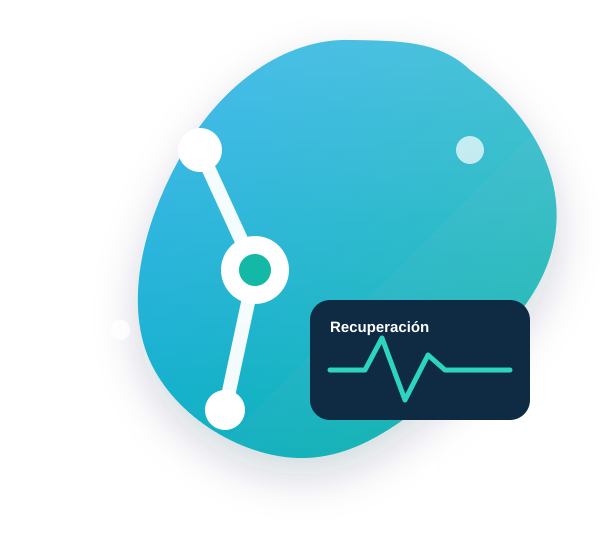
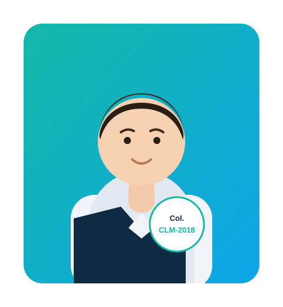
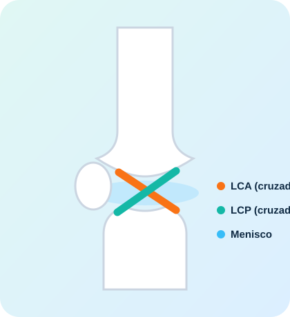

Fisioterapia deportiva
Prevención, tratamiento y readaptación de lesiones para deportistas amateur y profesionales. Vuelve a competir con garantías.
Más informaciónFisioterapia deportiva, readaptación de lesiones y especialización en recuperación de ligamento cruzado. Ahora con un portal online para seguir tu rehabilitación paso a paso.

Tratamientos personalizados basados en la evidencia para que vuelvas a moverte sin dolor y rindas al máximo.
Prevención, tratamiento y readaptación de lesiones para deportistas amateur y profesionales. Vuelve a competir con garantías.
Más informaciónRecuperación funcional progresiva tras lesión o cirugía, con planes de ejercicio terapéutico hasta el alta deportiva.
Más informaciónTécnicas manuales avanzadas para aliviar el dolor, mejorar la movilidad articular y liberar la tensión muscular.
Más informaciónValoración ecográfica musculoesquelética para un diagnóstico preciso y un seguimiento objetivo de tu evolución.
Más informaciónTratamiento eficaz de los puntos gatillo miofasciales para reducir el dolor y recuperar la función muscular.
Más informaciónRehabilitación específica para mejorar la movilidad, el equilibrio y la calidad de vida en patología neurológica.
Más información
Fisioterapeuta graduado por la Universidad Católica de Murcia (UCAM) en 2018. Desde entonces he dedicado mi carrera a ayudar a personas y deportistas a recuperarse de sus lesiones y a volver a hacer lo que más les gusta.
Actualmente compagino mi consulta con mi labor como fisioterapeuta de la Selección de Baloncesto de Castilla-La Mancha, lo que me mantiene a la vanguardia de la fisioterapia deportiva de alto rendimiento.
La rotura del ligamento cruzado anterior es una de las lesiones más temidas. Te acompaño en todo el proceso, desde el preoperatorio hasta la vuelta total a tu deporte, con un programa estructurado por fases y seguimiento desde el portal del paciente.
Reducir inflamación, recuperar movilidad y fortalecer antes de la cirugía.
Control del dolor, movilidad de la rodilla y activación muscular progresiva.
Ganar fuerza, estabilidad y confianza en la articulación.
Gestos deportivos, pliometría y tests de alta para volver con seguridad.

Un espacio privado donde sigues tu rehabilitación desde casa. Accede a tus ejercicios en vídeo, registra tu evolución y mantén el contacto con tu fisio en todo momento.
Sesiones presenciales en la clínica o acompañamiento completo desde el portal del paciente.
Tratamiento presencial en Albacete
Portal del paciente — acompañamiento total
Pacientes que confiaron en el proceso y volvieron a hacer lo que más les gusta.
La confianza de quienes ya han recuperado su movimiento es mi mejor carta de presentación.
«Me operé del cruzado y Álvaro me guió en cada fase. El portal con los vídeos me ayudó muchísimo a hacer los ejercicios bien en casa. Volví a jugar mejor que antes.»
«Profesional como pocos. Llevaba meses con dolor de espalda y en pocas sesiones noté un cambio enorme. Explica todo con detalle y se nota que le apasiona.»
«El mejor fisio de Albacete sin duda. Trato excelente, instalaciones geniales y resultados reales. Lo recomiendo a todo el mundo.»
Resolvemos las dudas más habituales sobre los tratamientos y el portal del paciente.
Incluye acceso completo al portal del paciente: tu plan de ejercicios en vídeo personalizado, seguimiento de tu progreso por fases, registro de dolor y movilidad, y chat directo con Álvaro para resolver dudas. Es una suscripción mensual sin permanencia que puedes cancelar cuando quieras.
Pulsa en "Suscribirme al portal" o "Portal del paciente". Rellena tus datos, cuéntanos tu lesión y qué quieres mejorar, y completa la suscripción. Al instante tendrás acceso a tu espacio privado con tu plan de ejercicios.
El portal es un complemento ideal para llevar tu recuperación desde casa, especialmente en la rehabilitación de ligamento cruzado. En muchos casos combinamos sesiones presenciales con el seguimiento online para maximizar resultados. Álvaro te recomendará lo mejor según tu caso.
Depende de cada persona, pero la recuperación completa tras una reconstrucción de LCA suele llevar entre 6 y 9 meses, estructurada en fases. Con un buen acompañamiento y constancia en los ejercicios, la vuelta al deporte es totalmente posible.
Sí. El Plan Recuperación no tiene permanencia: puedes cancelarlo en cualquier momento sin penalización.
Cuéntame qué te ocurre y te ayudaré a recuperarte. Respondo lo antes posible.